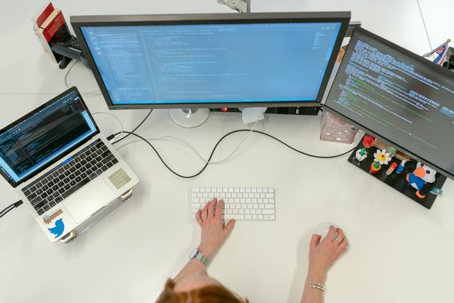

Mengenal Profesi Full Stack Developer: Definisi dan Skill yang Perlu Dikuasai
Untuk kamu yang tertarik di bidang programming, tentu kamu tidak asing dengan istilah Full Stack Developer. Profesi ini berkaitan dengan proses pembuatan aplikasi website. Penasaran apa itu Full Stack Developer? Yuk simak penjelasan dari Gamelab berikut ini.
Definisi Full Stack Developer
Apakah kamu pernah membuat sebuah website? Jika iya, tentu kamu setidaknya sudah memahami bagaimana membuat sebuah website.
Seorang Full Stack Developer merupakan seseorang yang ahli dalam segala sisis pembuatan website, baik back end maupun front end developing.
Front end developer memiliki tugas mengerjakan segala hal yang dapat dilihat oleh pengguna. Mulai dari fitur-fitur, hingga desain website. Maka, front end developer harus menguasai User Interface (UI), UX (User Experience), HTML atau CSS, dan bahasa pemrograman seperti JavaScript.
Sementara itu, back end developer berkaitan dengan semua hal yang terletak ‘di belakang’ layar website atau bagian yang tidak dapat dilihat oleh pengguna. Seorang back end developer harus menguasai dan memahami mengenai database, server, keamanan website, struktur dan manajemen konten, serta bahasa pemrograman khusus seperti Rubby, PHP, Phyton, dan lain sebagainya.
Nah, dengan begitu, kita bisa menyimpulkan bahwa full stack developer adalah seseorang yang terampil melakukan kedua tugas tersebut. Tidak hanya itu, dia juga bertugas mengembangkan web, troubleshooting, mengatasi bug, dan juga menciptakan fitur baru.
Skill yang Wajib Dikuasai Full Stack Developer
Meskipun mungkin profesi Full Stack Developer masih cukup asing di telinga, tetapi pekerjaan ini merupakan salah satu profesi impian yang diinginkan banyak orang. Mengingat gaji yang ditawarkan untuk pekerjaan ini cukup menggiurkan. Akan tetapi, butuh skill khusus agar kamu bisa bekerja sebagai Fullstack Web Developer. Apa sajakah itu?
- Memahami HTML dan CSS
- Menguasai JavaScript
- Menguasai Bahasa Pemrograman Untuk Back End
Hal pertama yang harus kamu kuasai jika ingin menjadi seorang Full Stack Developer adalah menguasai HTML dan CSSS. HTML memiliki fungsi untuk pembuatan struktur website, sedangkan CSS digunakan untuk mengatur dan mendesain halaman website supaya memiliki tampilan yang menarik.
Seorang Full Stack Developer juga harus menguasai JavaScript. Bahasa pemrograman ini sangat bermanfaat untuk membuat website menjadi lebih interaktif.
Mengetahui aspek front end saja tidak cukup untuk menjadi seorang Full Stack Developer. Kamu juga harus menguasai dari sisi back end. Salah satunya adalah menguasai bahasa pemrograman. Front end developer wajib mengetahui dan mengerti HTML, CSS, dan JavaScript untuk membangun struktur website. Sedangkan di bagian back end, kamu perlu memahami bahasa pemrograman yang sering digunakan. Misal Phyton, JavaScript, PHP, Ruby, Java, dan C++.
Dengan menguasai bahasa pemrograman, kamu bisa memahami bagaimana cara kerja database, application logic, user authentication, dan integrasi semua fungsi yang terdapat di front end. Baca lebih banyak
Trik Menjadi Seorang Full Stack Developer
Itu dia penjelasan lengkap mengenai definisi dan skill yang dibutuhkan untuk menjadi seorang Full Stack Developer. Menjadi seorang Full Stack Developer tentu membutuhkan skill khusus yang hanya dapat kamu kuasai jika kamu mempelajarinya dengan mendalam.
Nah, salah satu cara untuk mempelajari skill yang dibutuhkan untuk menjadi Full Stack Developer adalah dengan mengikuti Bootcamp Full Stack Web Developer yang bisa kamu ikuti di Gamelab Indonesia.
Yuk raih impianmu agar siap disalurkan kerja menjadi Full Stack Developer dengan belajar secara intensif secara penuh melalui Program Bootcamp Offline dari Gamelab.